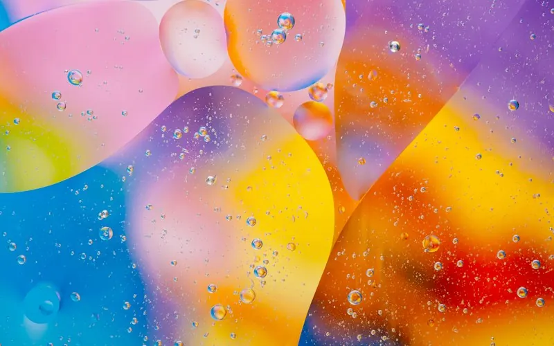
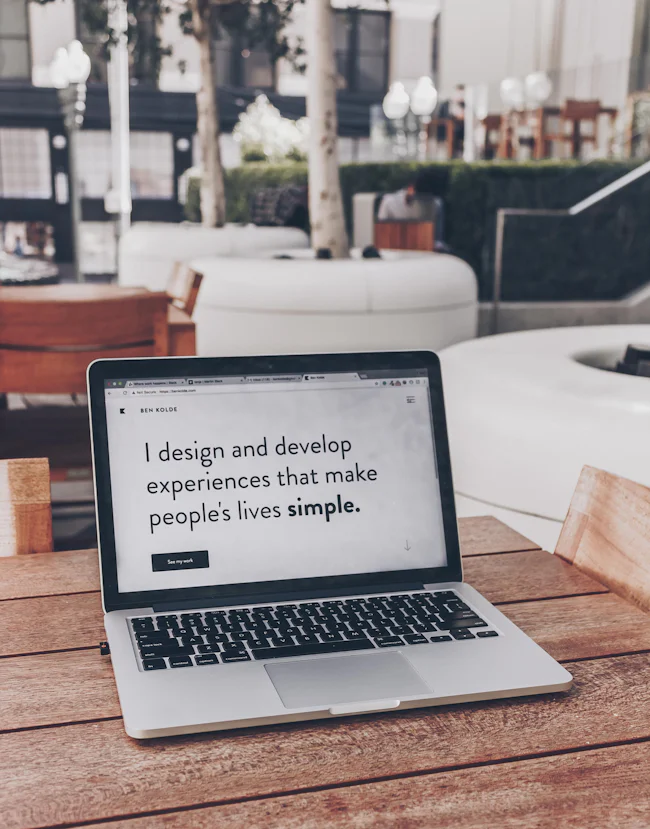

The Kinetic Grid: Swiss Rationalism Reimagined
How modern creative practitioners are balancing algorithmic tools with deliberate analog imperfections in brand architecture.
Read EssayDiscourse on visual culture, emerging interaction paradigms, typography theory, and the philosophical underpinnings of modern design practice.
As generative computational models become omnipresent, creative value has decisively pivoted back toward intentional friction, tactile printmaking, and bespoke typography.
Explorations into Swiss modernism, dynamic variable fonts, kinetic micro-interactions, and cross-cultural glyph design.
Designing for spatial computing canvases (VisionOS & Quest), eye-gaze ergonomics, and high-fidelity design tokens.
Psychological resonance of high-voltage contrast, accessible contrast gamuts, and distinctive studio brand aesthetics.
Actionable breakdowns of case study narratives, agency client pitches, creative burnout, and senior design mentorship.
How modern creative practitioners are balancing algorithmic tools with deliberate analog imperfections in brand architecture.
Read EssayA deep dive into gaze tracking, 3D typography depth scales, and spatial audio cues in next-generation augmented interfaces.
Read EssayWhat creative directors actually scrutinize in junior case studies: narrative clarity, process sketches, and rationales over polished Dribbble shots.
Read Essay
Why luxury brands and independent cultural institutions are turning toward electric coral, vivid ultraviolet, and deep ink black tones.
Read EssayStrategies for visual creators to maintain artistic curiosity, develop personal projects, and avoid burnout in deadline-driven agency pipelines.
Read EssayIn a digital-first ecosystem, identity systems live as dynamic physics simulations, WebGL shaders, and procedural behavior states.
Read EssayReclaiming human intent and artistic signature when collaborating with diffusion models, neural textures, and generative nodes.
Read Essay
How design engineering teams bridge Figma components with React, SwiftUI, and WebGL codebases without visual drift.
Read EssayInvestigating spot inks, French fold bindings, and heavy textured stocks as the ultimate antidote to infinite digital feeds.
Read Essay